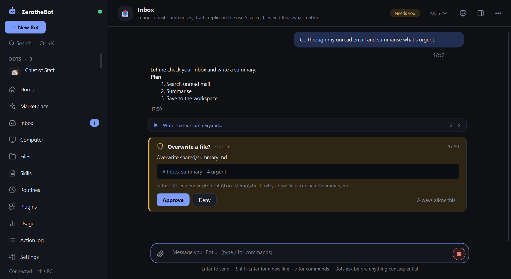

Always on
A background service keeps Bots, routines and unfinished tasks running with the window closed. Interrupted work resumes after a restart.
Create named Bots with a job and a memory that grows. Message one a task and it works across apps and websites, keeps you posted, and comes back only when something needs your approval.
The desktop app is for Windows. On Linux, macOS or Docker you can run the headless service and use it from your phone or the browser. See the README.

Hand off the work, not the control. Everything a Bot does is visible, and everything consequential waits for you.
A background service keeps Bots, routines and unfinished tasks running with the window closed. Interrupted work resumes after a restart.
One shared computer with a real Chromium browser, a workspace and a terminal. Log in to a site once and every Bot can use it, each on its own screen.
Hit a CAPTCHA, login or 2FA and the Bot hands that step to you. Drive its browser like a remote desktop, then hand back. Bots never type passwords.
Each Bot remembers your preferences, your voice and past work, and you can read and edit all of it. Stale facts are flagged to re-check.
Bots message each other, share group chats with @mentions and hand tasks over with a single owner. A Chief of Staff can run point for specialists.
Press Follow along, do the job once, and the Bot drafts a skill from what you did. Test it, activate it, then schedule it as a routine.
Anthropic or any OpenAI-compatible endpoint. Models are detected from your provider into a dropdown, and each Bot can use a different one.
Built-in Gmail, Calendar, Slack, Notion, Linear, Jira and GitHub, a generic REST connector, your own plugins, and any MCP server.
A mobile web app with the same chats, live streaming, approvals and take-over view. Add push alerts with the free ntfy app.
Bots work end to end and ask before anything consequential. Approve once, or allow it always.
Setup is a message, not a diagram.
Run the installer. It sets up the app and offers to download the Chromium browser engine (about 150 MB) your Bots will use.
In Settings > Models paste a key, then pick a model from the dropdown. Running Ollama or LM Studio locally needs no key.
Pick a role like Inbox, Researcher or Bug Fixer, or describe your own, then message it the task, the context and the finish line.
Bots do the work end to end and stop for the actions that matter.
You approve each one once, or set a standing rule you can delete later.
Want fewer prompts? Auto Review lets a reviewer model approve clearly low-risk actions and escalate everything else to you. Purchases, logins and new connectors always ask.
Honest limits: the terminal guard is a heuristic, not an OS sandbox. For hard isolation, run the computer in a VM or Docker.
One installer, no Python, no admin prompt. Install it for just your account, and upgrade any time without losing your Bots.
The installer isn't code-signed yet, so SmartScreen warns about any new unsigned app. Choose More info, then Run anyway, or check the SHA-256 below first.
22ed406a9556016efa4d92e4abe3484e4dbb3525624d7e03a91243146c500fc3
Get-FileHash .\ZerotheBot-Setup-1.5.0.exe -Algorithm SHA256
.\ZerotheBot-Setup-1.5.0.exe /VERYSILENT /CURRENTUSER
Yes. ZerotheBot is open source under the MIT license and costs nothing. You pay your model provider for usage, or use free OpenRouter models, or run a local model with Ollama or LM Studio.
Free OpenRouter models have per-account daily limits, so they suit trying it out or light use more than heavy daily work.
No. The installer includes everything the app needs. The only extra download is the Chromium browser engine (about 150 MB), which the installer offers during setup.
Anthropic, and any OpenAI-compatible endpoint: OpenAI, OpenRouter, Groq, Ollama, LM Studio, vLLM and more. Pick a model that supports tool calling, and a vision model for Bots that browse, since they work from screenshots.
The installer is not code-signed yet, and SmartScreen shows a warning for new unsigned apps. Choose More info then Run anyway. To be sure the file is the one published here, compare its SHA-256 checksum with the one in the download section.
Sending, submitting, buying, deleting, running unfamiliar commands, installing, logging in and granting new connectors all ask first. The terminal guard is a heuristic and not an operating-system sandbox, so for hard isolation run the computer in a VM or Docker. Only install plugins you trust, since code plugins run with your permissions.
Conversations, memory, skills and the shared workspace are in %APPDATA%\OpenGrokBot on your PC. API keys and connector tokens are stored in Windows Credential Manager, never in files or the database.
The desktop app is built for Windows. The headless service also runs on Linux, macOS and Docker, and you can use it from any browser or from the mobile web app.
Use Settings > Apps in Windows. The uninstaller stops the background service and asks whether to keep or delete your Bots and settings. Keys saved in Credential Manager are not removed.